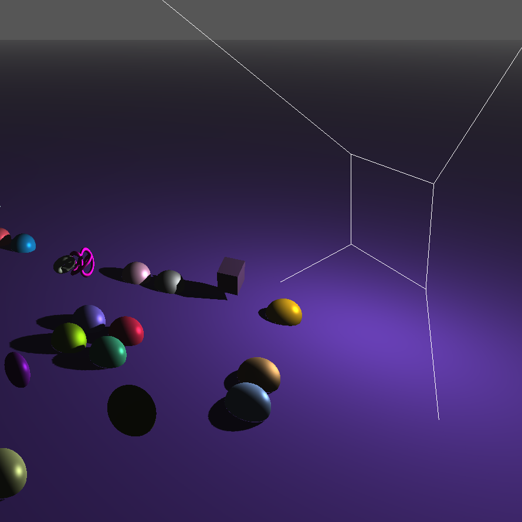

3D Graphics
Implemented shadow mapping for a perspective light in a real time 3D demo. Generated a depth map from the light’s POV, then sampled it to render hard shadows in the main pass. Added exponential fog, gamma correction, and ImGui controls for light parameters, depth bias, and texture resolution. The demo lets you move both camera and light, toggle the depth preview, and visualize the light’s frustum in world space.
Texture to create depth textures (with comparison mode) and RGBA8 targets.FrameBuffer class that attaches depth/color textures and validates completeness without
DSA.textureProj()) to compute shadows, apply
“ignore shadows behind light,” gamma correct, and add exponential fog.
My first attempt to draw the frustum used the NDC cube’s line data directly, but that produced extra diagonals
on each face, making a star shaped outline instead of just 12 edges. I had to rebuild a proper 8 vertex,
24 index edge cube and correctly compute inverse(lightProj) × lightToWorld to remove those unwanted
lines.
Another failure was a phantom “pillar” shadow behind the light: fragments with negative shadow space z still
sampled the depth map and cast an incorrect shadow. I fixed it only after adding
if (vPositionInShadowSpace.z < 0 && !uDoShadowBehindLight) shadow = 1.0;
in shadows.frag.
Finally, tuning depth bias was a struggle: too little offset caused “shadow acne,” too much created a gap.